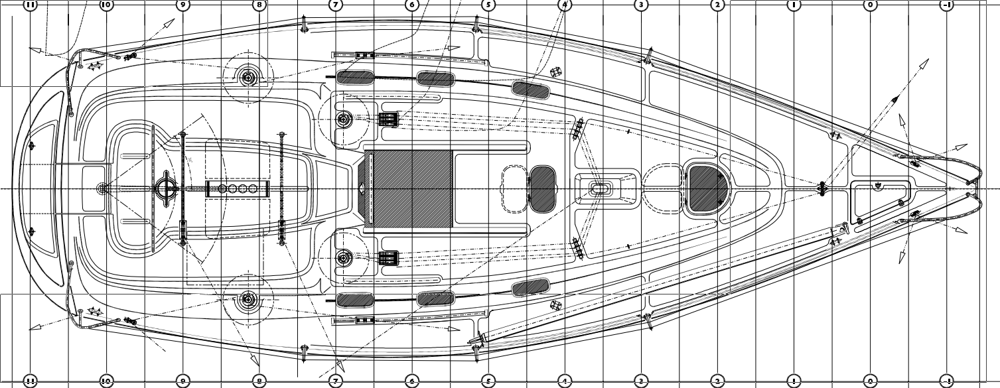
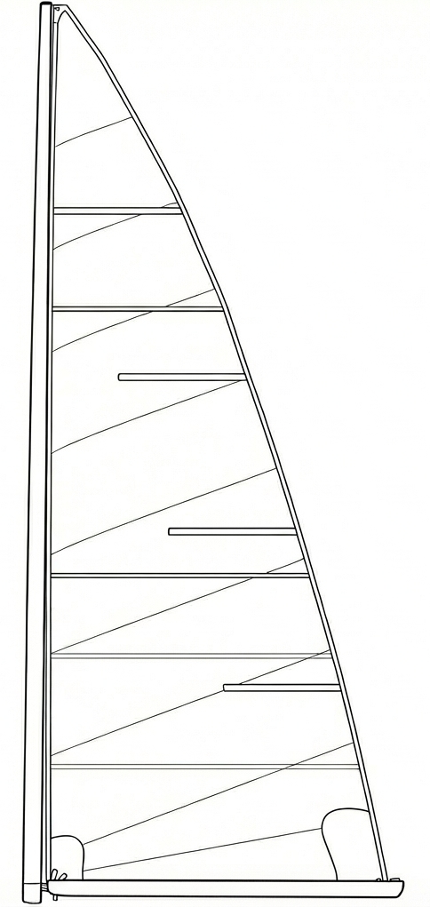
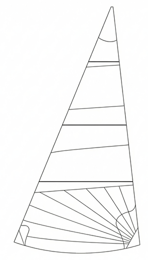
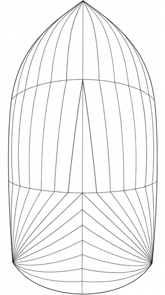

<!DOCTYPE html>
<html lang="es">

<head>
    <meta charset="UTF-8">
    <meta name="viewport" content="width=device-width, initial-scale=1.0">
    <title>Reglamento Ro330 Class</title>

    <link rel="icon" type="image/png" href="img/icon.png">
    <!-- Reutiliza la hoja de estilos principal -->
    <link rel="stylesheet" href="css/style.css">

    <link rel="stylesheet" href="css/reglamento.css">

</head>
<link rel="icon" href="img/Icon.png" type="image/png">

<script src="js/main.js"></script>
</body>

</html>

<body>

    <header>
        <a href="index.html" class="logo">Ro330 CLASS</a>

        <button class="nav-toggle" aria-label="Abrir menú" aria-expanded="false">
            <span class="hamburger-line"></span>
            <span class="hamburger-line"></span>
            <span class="hamburger-line"></span>
        </button>

        <ul class="nav-links">
            <li><a href="index.html">Inicio</a></li>
            <li><a href="competicion.html">Competición</a></li>
            <li><a href="reglamento.html" class="active">Reglas de clase</a></li>
            <li><a href="documentacion.html">Documentación</a></li>
        </ul>
    </header>

    <!-- Hero con bannerR -->
    <section class="hero"
        style="background-image: url('img/bannerR.jpg'); background-position: bottom; position: relative;">
        <div class="hero-content">
            <h1>Reglamento Ro330</h1>
            <p></p>
        </div>

        <div class="photo-credit hero-photo-credit">
            Imagen: &copy; Rosana Calvo
        </div>
    </section>
    <main class="reglamento-main">


        <!-- Texto introductorio antes del índice -->
        <section class="reglamento-section">
            <p>
                La Clase Ro330 reúne barcos con pequeñas diferencias entre series y configuraciones, por lo que no es
                posible aplicar un reglamento estrictamente monotipo. Para permitir que la mayoría de unidades
                existentes puedan competir juntas, la clase adopta normas laxas pero controladas, lo suficientemente
                amplias como para incluir a todos, pero no tanto como para que aparezcan configuraciones que rompan el
                equilibrio deportivo. La verificación técnica se simplifica utilizando únicamente el certificado ORC
                vigente —Club o Internacional— como referencia común para todos los barcos.
            </p>
        </section>


        <!-- Sección Embarcación -->
        <section id="embarcacion" class="reglamento-section">
            <h2>Embarcación</h2>

            <div class="embarcacion-box">
                <div class="embarcacion-box-title">Parámetros generales</div>

                <div class="embarcacion-row">
                    <span class="embarcacion-label">Peso</span>
                    <span class="embarcacion-value">min 3800 kg – max 4500 kg</span>
                </div>

                <div class="embarcacion-row">
                    <span class="embarcacion-label">Manejo</span>
                    <span class="embarcacion-value">Rueda o caña indistintamente</span>
                </div>

                <div class="embarcacion-row">
                    <span class="embarcacion-label">Calado</span>
                    <span class="embarcacion-value">1,70 m máx.</span>
                </div>
            </div>

            <p>
                Solamente podrán competir los <strong>Ro330 edición SD (Short Draft)</strong>, dado que la versión de
                calado corto es la
                más popular.
                Está terminantemente prohibido realizar modificaciones en casco, pala o orza.
                La embarcación deberá cumplir los parámetros dictados por la división Cruiser/Racer de ORC y llevar a
                bordo el material
                de seguridad exigido por World Sailing para la competición.
            </p>

            <h3>Cubierta</h3>
            <div class="embarcacion-box">
                <div class="embarcacion-box-title">Elementos mínimos de cubierta</div>

                <div class="embarcacion-row">
                    <span class="embarcacion-label">Winches</span>
                    <span class="embarcacion-value">4</span>
                </div>

                <div class="embarcacion-row">
                    <span class="embarcacion-label">Stoppers</span>
                    <span class="embarcacion-value">8</span>
                </div>

                <div class="embarcacion-row">
                    <span class="embarcacion-label">Regala de proa a popa</span>
                    <span class="embarcacion-value">Mínimo 3 cm de altura</span>
                </div>
            </div>

            <div class="cubierta-image-wrapper">
                
            </div>

            <h3>Propulsion</h3>
            <p>
                Se tendra como motor minimo obligatorio es el Volvo Penta MD2020 de 18.5hp que trae de serie. Se usara
                esa potencia como potencia mínima para la clase.
                La helice plegable esta permitida de cualquier material, mecanismo y construccion.
            </p>
        </section>

        <!-- Sección Aparejo / Velas -->
        <section id="aparejo-velas" class="reglamento-section">
            <h2>Aparejo</h2>

            <h3>Velas</h3>
            <p>
                Solamente se podrán llevar y usar las velas indicadas a continuación, respetando sus áreas máximas
                permitidas.
            </p>

            <!-- Mayor -->
            <h4 id="vela-mayor">Mayor</h4>
            <div class="vela-layout">
                <div class="vela-info">
                    <div class="area-box">
                        <strong>Área máxima permitida:</strong> 29 m²
                    </div>
                    <p>
                        Se podrá llevar una única mayor a bordo. Se permite cualquier material de confección (Dacron,
                        Pentex, Laminados, etc.) siempre que no supere el área máxima.
                    </p>
                    <ul class="reglamento-list">
                        <li><strong>Sables:</strong> Está permitido el uso de sables forzados (<em>full batten</em>) o
                            parciales indistintamente.</li>
                        <li><strong>Rizos:</strong>los rizos son opcionales pero recomendables.</li>
                        <li><strong>Identificación:</strong> Es obligatorio portar el número de vela oficial en ambos
                            lados, con dimensiones legibles según la normativa vigente.</li>
                    </ul>
                </div>
                <div class="vela-image-wrapper">
                    
                </div>
            </div>

            <!-- Velas de proa -->
            <h4 id="vela-genova">Velas de proa</h4>
            <div class="vela-layout">
                <div class="vela-info">
                    <div class="area-box">
                        <strong>Área máxima permitida:</strong> 30 m²
                    </div>
                    <p>
                        Se podrán llevar como máximo dos velas de proa a bordo. El espíritu de la clase busca
                        simplificar la maniobra y reducir costes, por lo que <strong>no está permitido el cambio de vela
                            de proa durante la regata</strong>, salvo en caso de rotura grave que impida la navegación.
                    </p>
                    <ul class="reglamento-list">
                        <li><strong>Enrolladores:</strong> Las unidades equipadas con enrollador de génova pueden
                            mantenerlo instalado. No es obligatorio llevar la vela enrollada, el perfil del enrollador
                            puede no estar operativo. El uso de Tuff-Luff o Garruchos esta permitido.</li>
                        <li><strong>Protección UV:</strong> Se permite el uso de bandas de protección solar en baluma y
                            pujamen, sin que estas penalicen en la medición ni se consideren refuerzos estructurales
                            ilegales.</li>
                        <li><strong>Sables:</strong> Se permiten sables en la baluma del génova (sables de batten car o
                            convencionales).</li>
                    </ul>
                </div>
                <div class="vela-image-wrapper">
                    
                </div>
            </div>

            <!-- Spinnaker -->
            <h4 id="vela-spinnaker">Spinnaker</h4>
            <div class="vela-layout">
                <div class="vela-info">
                    <div class="area-box">
                        <strong>Área máxima permitida:</strong> 68 m²
                    </div>
                    <p>
                        Se podrán llevar a bordo y usar hasta dos spinnakers <strong> obligatoriamente
                            simétricos</strong>. Se recomienda
                        disponer de un modelo "All Purpose" (S2) y/o un modelo de viento fuerte (S4), aunque la elección
                        de gramajes y corte es libre.
                    </p>
                    <ul class="reglamento-list">
                        <li><strong>Maniobra:</strong> El spinnaker debe ser amurado obligatoriamente mediante un
                            tangón. No está permitido el uso de botalones (fijos o retráctiles) ni amurar el spinnaker
                            simétrico directamente a la proa o botalón a modo de asimétrico.</li>
                        <li><strong>Material:</strong> Se permite cualquier tipo de Nylon o poliéster. No hay
                            restricciones mínimas de gramaje, permitiendo configuraciones ligeras para ventolinas.</li>
                        <li><strong>Recogida:</strong>No se permite el uso de calcetín de spinnaker para facilitar la
                            maniobra en tripulaciones reducidas.</li>
                    </ul>
                </div>
                <div class="vela-image-wrapper">
                    
                </div>
            </div>

            <!-- Jarcia -->
            <h2 id="jarcia">Jarcia</h2>

            <div class="jarcia-layout">
                <p>
                    La jarcia debe mantenerse fiel al diseño original para garantizar la igualdad de prestaciones y
                    contener los costes de mantenimiento. A continuacion se añaden diferentes restricciones sobre
                    diferentes elementos:
                </p>
                <ul class="reglamento-list">

                    <li><strong>Jarcia de labor: </strong>Se permite la optimización libre de la jarcia de labor
                        (cabullería, escotas y drizas), ademas de la posibilidad de añadir dirzas adicionales. Ademas se
                        permitela actualización de la acastillaje (poleas, mordazas) para
                        facilitar la maniobra.</li>
                    <li><strong>Backstay: </strong>El backstay puede ser de cualquier material y trimable,
                        tiene que ser unico pero puede contener una pata de gallo. La magnitud de la ventaja mecanica
                        (desmultiplicacion) es de libre eleccion.
                        Tiene que ser unico (burdas no permitidas) pero se puede arraigar a una pata de gallo.</li>
                    <li><strong>Jarcia firme:</strong> Los obenques y stay de proa deben ser de cable de acero
                        inoxidable
                        trenzado (tipo 1x19 o similar). No está permitido el uso de varilla sólida (Rod) ni jarcia
                        textil (PBO, Carbono) para la sujeción del palo.</li>
                    <li><strong>Perfil stay:</strong> Está permitido el uso de enrollador de génova. Los
                        barcos que naveguen con <i>tuff-luff</i> o estay de regata no tendrán penalización ni
                        bonificación frente
                        a los que usen enrollador, fomentando la participación de la flota de crucero.</li>

                </ul>

                <!-- Contenedor para tabla e imagen lado a lado -->
                <div class="jarcia-table-image-wrapper">
                    <!-- COLUMNA 1: Caja de jarcia -->
                    <div class="jarcia-box">
                        <div class="jarcia-box-title">Elementos de jarcia</div>

                        <div class="jarcia-row">
                            <span class="jarcia-label">Mástil</span>
                            <span class="jarcia-value">P máx. = 11,6 m</span>
                        </div>

                        <div class="jarcia-row">
                            <span class="jarcia-label">Crucetas</span>
                            <span class="jarcia-value">Dos pisos de crucetas de aluminio</span>
                        </div>

                        <div class="jarcia-row">
                            <span class="jarcia-label">Tangón</span>
                            <span class="jarcia-value">Aluminio o carbono, máx. 3,6 m</span>
                        </div>

                        <div class="jarcia-row">
                            <span class="jarcia-label">Obenques</span>
                            <span class="jarcia-value"> V1 = Ø8; D1, D2 = Ø7</span>
                        </div>
                        <div class="jarcia-row">
                            <span class="jarcia-label">Botavara</span>
                            <span class="jarcia-value">Indiferente</span>
                        </div>

                        <div class="jarcia-row">
                            <span class="jarcia-label">Trapa</span>
                            <span class="jarcia-value">Trapa con contra rígida de muelle obligatoria</span>
                        </div>
                    </div>

                    <!-- COLUMNA 2: Imagen -->
                    <div class="jarcia-image-wrapper">
                        
                    </div>
                </div>

            </div>
        </section>

        <!-- Sección Tripulación -->
        <section id="tripulacion" class="reglamento-section">
            <h2>Tripulación</h2>
            <p>
                La Clase Ro330 busca fomentar la máxima participación, eliminando barreras de entrada para equipos
                formados por clubes o tripulaciones que naveguen en barcos cedidos.
            </p>
            <ul style="list-style-type: disc; margin-left: 20px; margin-bottom: 20px; font-weight: 300; color: #444;">
                <li><strong>Espíritu Corinthian:</strong> Se permite un máximo de un (1) tripulante profesional a bordo.
                    El resto de la tripulación debe ser amateur.</li>
                <li><strong>Timonel:</strong> La posición de timonel es libre (indiferente). Puede gobernar cualquier
                    miembro de la tripulación, incluido el profesional si el equipo lo decide.</li>
                <li><strong>Presencia del Armador:</strong> No es obligatoria la presencia del armador ni de familiares
                    a bordo. El barco puede competir con una tripulación totalmente ajena a la propiedad.</li>
                <li><strong>Posiciones a bordo:</strong> Las funciones de los tripulantes no están restringidas y pueden
                    rotar o variar libremente durante la competición.</li>
                <li><strong>Límite de Peso y Tripulantes:</strong> Se permite embarcar un máximo de 10 tripulantes con
                    un peso total conjunto de 450 kg. Excepción: Si la tripulación está formada por 4 personas o menos,
                    el límite de peso será el máximo permitido por la ficha técnica de la embarcación.</li>
            </ul>
        </section>
        <section id="inspecciones" class="reglamento-section">

            <hr
                style="border: 0; height: 1px; background-image: linear-gradient(to right, rgba(0, 0, 0, 0), rgba(0, 0, 0, 0.75), rgba(0, 0, 0, 0)); margin-bottom: 40px;">

            <p>
                Con el objetivo de eliminar barreras de entrada y facilitar la logística, la Clase Ro330 no realizará
                inspecciones técnicas exhaustivas ni frecuentes. No se busca crear un entorno policial que desincentive
                la participación, sino un punto de encuentro accesible para todos los armadores.
            </p>
            <p>
                No obstante, la igualdad de la competición descansa en la buena fe de los participantes. Es
                <strong>responsabilidad exclusiva del armador</strong> velar por que su embarcación cumpla con este
                reglamento. Apelamos al honor y al espíritu deportivo (<em>Fair Play</em>) de cada equipo para respetar
                las normas y garantizar que las regatas se decidan en el agua y no por diferencias técnicas.
            </p>
        </section>
    </main>

    <footer>
        <p>Diseño totalmente conceptual.</p>
        <p>Sin ningun tipo de derecho legal.</p>
    </footer>
</body>

</html>